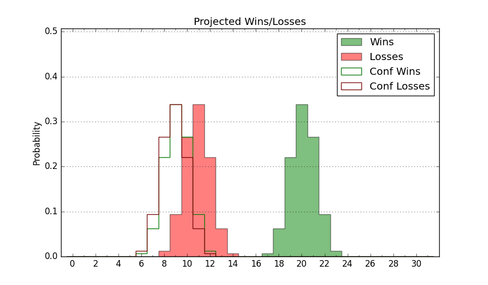

| Home | Game Probabilities | Conferences | Preseason Predictions | Odds Charts | NCAA Tournament |
| City: | Mississippi State, Mississippi | |
| Conference: | SEC (7th)
| |
| Record: | 6-6 (Conf) 17-8 (Overall) | |
| Ratings: | Comp.: 17.6 (41st) Net: 17.6 (41st) Off: 110.4 (88th) Def: 92.8 (14th) SoR: 66.1 (42nd) |
| Remaining | ||||||
|---|---|---|---|---|---|---|
| Date | Opponent | Win Prob | Pred. | |||
| 2/21 | Mississippi (77) | 77.0% | W 75-67 | |||
| 2/24 | @ LSU (79) | 50.2% | W 73-72 | |||
| 2/27 | Kentucky (21) | 53.8% | W 79-78 | |||
| 3/2 | @ Auburn (9) | 16.5% | L 66-77 | |||
| 3/6 | @ Texas A&M (47) | 38.3% | L 67-70 | |||
| 3/9 | South Carolina (71) | 75.4% | W 69-62 | |||
| Previous | Game Score | |||||
| Date | Opponent | Win Prob | Result | Off | Def | Net |
| 11/8 | (N) Arizona St. (127) | 79.2% | W 71-56 | -0.3 | 8.4 | 8.0 |
| 11/11 | Tennessee Martin (216) | 94.5% | W 87-63 | -1.8 | 2.1 | 0.3 |
| 11/14 | North Alabama (258) | 95.6% | W 81-54 | -20.0 | 22.1 | 2.0 |
| 11/18 | (N) Washington St. (32) | 46.1% | W 76-64 | 6.6 | 9.7 | 16.3 |
| 11/19 | (N) Northwestern (55) | 55.4% | W 66-57 | -3.6 | 16.2 | 12.6 |
| 11/24 | Nicholls St. (261) | 95.7% | W 74-61 | -14.6 | -3.8 | -18.5 |
| 11/28 | @Georgia Tech (139) | 69.2% | L 59-67 | -21.4 | 3.2 | -18.2 |
| 12/3 | Southern (222) | 94.6% | L 59-60 | -21.5 | -10.1 | -31.5 |
| 12/9 | (N) Tulane (118) | 75.6% | W 106-76 | 22.4 | 4.1 | 26.6 |
| 12/13 | Murray St. (137) | 88.3% | W 85-81 | 19.6 | -32.9 | -13.2 |
| 12/17 | (N) North Texas (69) | 60.8% | W 72-54 | 22.9 | 9.1 | 32.0 |
| 12/23 | (N) Rutgers (92) | 69.0% | W 70-60 | 11.6 | 1.8 | 13.3 |
| 12/31 | Bethune Cookman (324) | 98.0% | W 85-62 | -3.1 | -1.3 | -4.4 |
| 1/6 | @South Carolina (71) | 47.4% | L 62-68 | -3.3 | -6.4 | -9.7 |
| 1/10 | Tennessee (6) | 38.3% | W 77-72 | 7.2 | 2.0 | 9.1 |
| 1/13 | Alabama (5) | 33.1% | L 74-82 | -3.3 | -1.4 | -4.7 |
| 1/17 | @Kentucky (21) | 25.5% | L 77-90 | 4.5 | -14.3 | -9.7 |
| 1/20 | Vanderbilt (214) | 94.4% | W 68-55 | -14.3 | 1.5 | -12.8 |
| 1/24 | @Florida (35) | 32.3% | L 70-79 | -3.8 | -12.0 | -15.8 |
| 1/27 | Auburn (9) | 40.1% | W 64-58 | -1.0 | 18.4 | 17.4 |
| 1/30 | @Mississippi (77) | 49.6% | L 82-86 | 20.7 | -24.8 | -4.1 |
| 2/3 | @Alabama (5) | 12.7% | L 67-99 | -12.0 | -6.7 | -18.7 |
| 2/7 | Georgia (99) | 82.0% | W 75-62 | 3.4 | 5.0 | 8.4 |
| 2/10 | @Missouri (132) | 67.8% | W 75-51 | -0.8 | 27.5 | 26.7 |
| 2/17 | Arkansas (117) | 84.9% | W 71-67 | 6.4 | -13.4 | -7.0 |
| Stats & Trends | |||||
|---|---|---|---|---|---|
| Current | Day | Week | Month | Season | |
| Composite | 17.6 | +0.0 | -0.4 | -0.2 | -2.3 |
| Comp Rank | 41 | -- | -1 | -4 | -15 |
| Net Efficiency | 17.6 | +0.0 | -0.4 | -0.1 | -- |
| Net Rank | 41 | -- | -1 | -- | -- |
| Off Efficiency | 110.4 | +0.1 | +0.2 | +0.7 | -- |
| Off Rank | 88 | +3 | -- | +1 | -- |
| Def Efficiency | 92.8 | -0.0 | -0.6 | -0.8 | -- |
| Def Rank | 14 | +1 | -1 | +4 | -- |
| SoS Rank | 42 | +1 | -11 | +13 | -- |
| Exp. Wins | 20.1 | +0.0 | +0.2 | +0.3 | -0.5 |
| Exp. Conf Wins | 9.1 | +0.0 | +0.2 | +0.3 | -0.9 |
| Conf Champ Prob | 0.0 | -- | -- | -0.1 | -8.3 |

| Advanced Stats | ||
|---|---|---|
| Stat | Value | Rank |
| Off Eff FG % | 0.537 | 82 |
| Off Ast Ratio | 0.162 | 64 |
| Off ORB% | 0.347 | 26 |
| Off TO Rate | 0.150 | 199 |
| Off FT Ratio | 0.369 | 80 |
| Def Eff FG % | 0.446 | 18 |
| Def Ast Ratio | 0.119 | 29 |
| Def ORB% | 0.235 | 32 |
| Def TO Rate | 0.170 | 53 |
| Def FT Ratio | 0.296 | 109 |